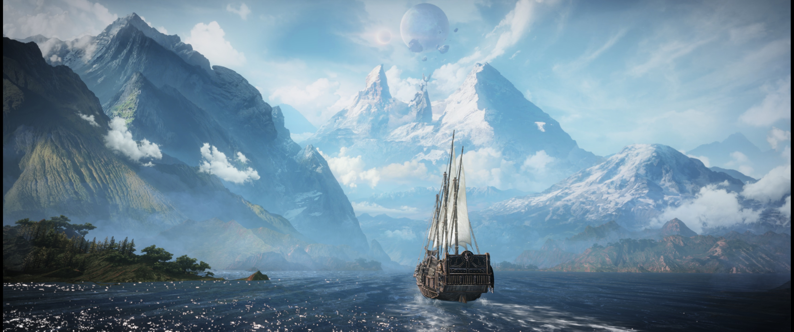

스마일게이트 RPG가 개발한 쿼터뷰 액션 MMORPG다. 2014년 11월 12일 최초 공개했으며 2018년 11월 7일부터 오픈 베타 테스트를 진행하였으며 2019년 12월 4일 정식 오픈했다. 이후 러시아, 일본, 글로벌 서버 순으로 런칭하였다.
정식 오픈 기준 시점으로 최적화는 준수한 편으로, 권장 사양을 지킨다면 원활하게 플레이 가능하다. 2011년 이후에 나온 쿼드코어 이상의 CPU와 16기가 정도의 램을 갖춘 컴퓨터로도 대규모 전투를 연출한 상황에서 프레임이 조금 떨어지는 수준이다. 다만, QHD 이상 해상도에서 공식 요구사항이 극단적으로 높아지는 것을 볼수 있는데, 60프레임 완전 보장을 기준으로 설명된 것으로 추정된다. 실제 플레이 상황에선 FHD 해상도와, 모든 옵션 최상을 기준으로 6세대 이후의 인텔 CPU, 라이젠 이후의 AMD CPU와 GTX1060 정도의 사양으로도 원활한 플레이가 가능하다. UHD 이상급 해상도에선 2080급 이상의 그래픽 카드 사용을 권장한다.